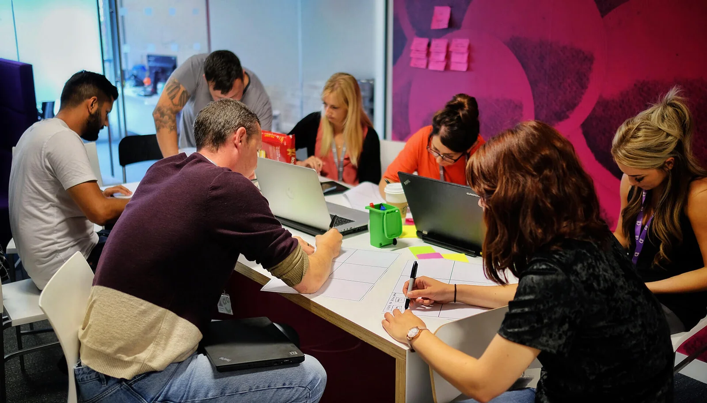

I involved the stakeholders in the early stages of the design process, as well as developers and copywriters through workshops and regular playbacks. I’ve run discovery, ideation and design workshops. During the ideation session, we had a brilliant idea to notify users on the page about events that might affect deliveries, e.g. harsh weather conditions that can disrupt the delivery.
Collaboratively with the team, we drew few personas based on our findings. This gave us a shared understanding of who are the users and what are their needs, and the obstacles they face.
After creating personas, we made assumptions about what users were trying to do based on behaviour analytics data. The data collected by me helped the team understand what customers were saying. We learnt that people want to be informed, they want to do things on their terms and they want to save themselves some money.
After getting an understanding of who the users are, what are their needs, and what we wanted to achieve, we prioritised a list of feature hypotheses. We filtered ideas by voting and using the feature matrix method. By the end of the workshop, we had a list of useful features that we could test.
Then I invited everyone to a workshop where we had a chance to sketch out their ideas and share them with others. Then at the end of this session, we discussed the sketches and voted for the best ideas. This exercise allowed me to gather draft wireframes that I later refined and used to produce testable prototypes.

I asked team members to sketch their ideas on a paper.